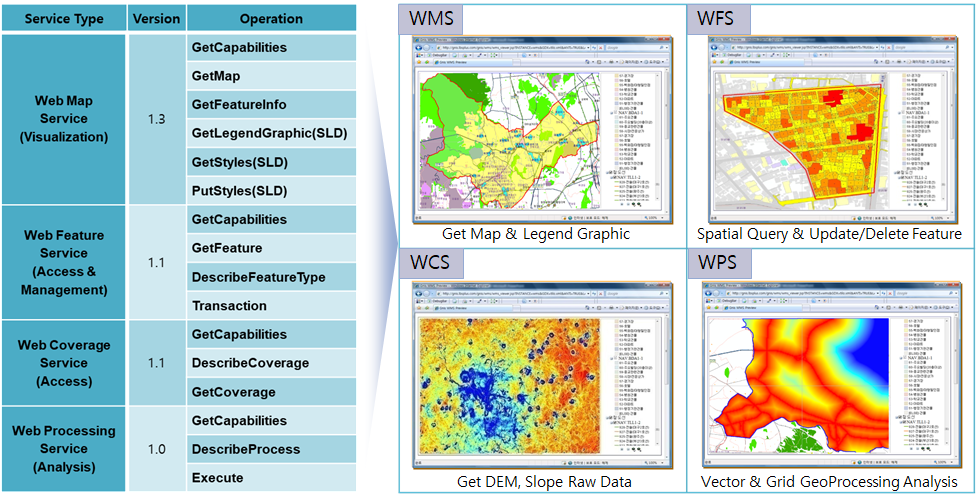
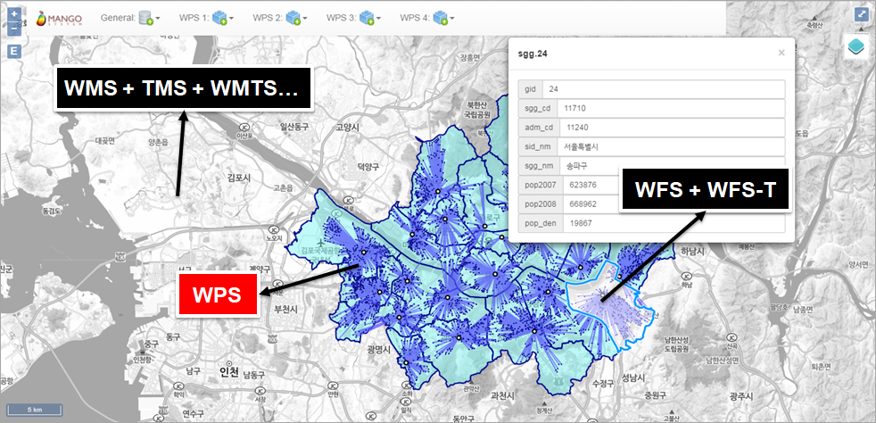
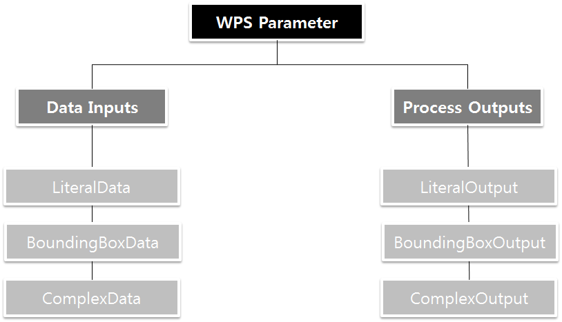
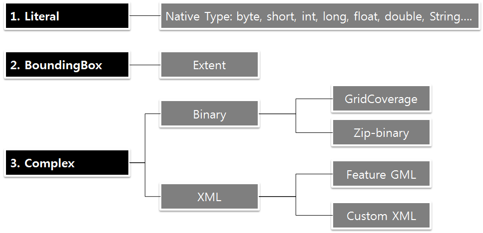

Open Geospatial Consortium (OGC)¶
개요¶
OGC는 전세계 530여 개 이상 정부 기관, 기업, 대학이 참여하고 있는 세계 최대 공간정보산업 표준화 기구입니다
주요 표준
데이터 포맷(GML, KML, IndoorGML, CityGML, NetCDF, GeoTIFF, 3DTiles 등)
OGC Web Service(WMS, WFS, WCS, WPS, CSW 등)에 이르는 표준 제정 및 인증
주요 참여 기관
해외: 미국 국토안보부, NASA, 마이크로소프트, 구글, 오라클, ESRI, 오토데스크 등
국내: 국토교통부, 공간정보산업진흥원, 공간정보연구원, 한국건설기술연구원, ETRI, 국토연구원, 부산대학교, 서울대학교, 안양대학교, 한국외국어대학교, 삼성 SDS, 현대 MN소프트 등
OGC Web Service¶
Web을 통해 WMS(지도, 범례), WFS(벡터, 공간쿼리, 편집), WCS(래스터, Subset, Resampling, Reprojection), WPS(공간분석 및 처리), CSW(메타데이터 카탈로그) 등의 서비스를 활용하는 체계입니다.
최근 국내 GIS 사업 발주 시 [OGC 표준 준수]가 기본 요구사항이 되었습니다.

활용 패턴¶
웹 GIS에서 각 서비스에 대한 활용 패턴은 다음과 같습니다.
WMS(WMTS, OSGeo TMS)는 배경지도나 주제도의 시각화 및 범례
WFS(WFS-T)는 벡터 데이터의 공간 및 속성 조회와 편집
WCS는 래스터 데이터의 추출(Subset, Resampling, Reprojection)
WPS는 공간분석 및 처리
CSW는 이들 서비스에 대한 메타데이터 카탈로그

Web Processing Service¶
Web Processing Service(WPS) 는 지리정보에 대한 다양한 처리 서비스(Geo-Processing service)들을 웹에서 정의하고 실행할 수 있도록 하기 위한 표준 인터페이스이며 모든 OGC 표준 웹 서비스(Web Feature Service, Web Coverage Service 등)들과 상호호환성을 갖도록 정의됩니다.
WPS는 특정 데이터에 직접 바인딩 되어 있지 않으며, 클라이언트에 의해 동적으로 주어지는 데이터 또는 데이터 참조(WFS 결과물 등)들을 입력으로 받아들여 이를 처리하는 프로세스 서비스들로 구성됩니다.
WPS는 간단한 계산(버퍼 연산 등)에서부터 복잡한 분석 연산(기후 모델의 생성 등)을 지원하며, 원칙적으로 WPS인터페이스를 기반으로 구현함에 있어 어떠한 제약사항도 없습니다. 즉 WPS를 구성하는 프로세스는 목적에 맞게 다양하게 구현할 수 있다는 것입니다.
WPS 서비스의 주요 Operation은 다음과 같습니다.
요청 |
응답** |
설명 |
GetCapabilities |
XML |
서비스 가능한 Process에 대한 메타정보를 XML로 반환 |
DescribeProcess |
XML |
프로세스에 대한 상세정보(input, output, 사용가능 포맷 등) 제공 |
Excute |
XML 등 |
WPS가 제공하는 프로세스들 중 하나를 실행하고 결과를 반환 WPS의 결과는 Map, Feature, Coverage 및 이들의 조합 또는 사용자 설정 포맷 등 다양하게 정의 가능 |
연산자¶
Web Processing Service 1.0.0 버전은 GetCapabilities, DescribeProcess, Execute의 3가지 Operation으로 구성됩니다.
1. GetCapabilities
WPS 서버에서 제공하는 Operation과 Process 목록에 대한 메타데이터를 제공합니다.
HTTP Get Request
http://127.0.0.1:8080/geoserver/ows? service=wps& version=1.0.0& request=GetCapabilities
2. DescribeProcess
WPS 서버에서 제공하는 프로세스의 Input, Output 파라미터와 각 파라미터가 사용하는 포맷과 관련한 Mime Type, 파라미터 기본값, 프로세스 상태 지원 여부 등 메타데이터를 제공합니다.
HTTP Get Request
http://127.0.0.1:8080/geoserver/ows? service=wps& version=1.0.0& request=DescribeProcess& Identifier=statistics:BufferFeatures
3. Execute
HTTT Get/Post 기반의 프로세스를 실행하는 Operation입니다. 다음 예는 Simplify 프로세스를 실행하는 요청문의 예입니다.
<?xml version="1.0" encoding="UTF-8"?>
<wps:Execute version="1.0.0" service="WPS"
xmlns:xsi="http://www.w3.org/2001/XMLSchema-instance"
xmlns="http://www.opengis.net/wps/1.0.0"
xmlns:wfs="http://www.opengis.net/wfs"
xmlns:wps="http://www.opengis.net/wps/1.0.0"
xmlns:ows="http://www.opengis.net/ows/1.1"
xmlns:gml="http://www.opengis.net/gml"
xmlns:ogc="http://www.opengis.net/ogc"
xmlns:wcs="http://www.opengis.net/wcs/1.1.1"
xmlns:xlink="http://www.w3.org/1999/xlink"
xsi:schemaLocation="http://www.opengis.net/wps/1.0.0 http://schemas.opengis.net/wps/1.0.0/wpsAll.xsd">
<ows:Identifier>statistics:Simplify</ows:Identifier>
<wps:DataInputs>
<wps:Input>
<ows:Identifier>inputFeatures</ows:Identifier>
<wps:Reference mimeType="text/xml" xlink:href="http://geoserver/wfs" method="POST">
<wps:Body>
<wfs:GetFeature service="WFS" version="1.1.0" outputFormat="GML3" xmlns:foss="http://www.opengeospatial.net/foss">
<wfs:Query typeName="foss:road"/>
</wfs:GetFeature>
</wps:Body>
</wps:Reference>
</wps:Input>
<wps:Input>
<ows:Identifier>tolerance</ows:Identifier>
<wps:Data>
<wps:LiteralData>30</wps:LiteralData>
</wps:Data>
</wps:Input>
</wps:DataInputs>
<wps:ResponseForm>
<wps:RawDataOutput mimeType="application/json">
<ows:Identifier>result</ows:Identifier>
</wps:RawDataOutput>
</wps:ResponseForm>
</wps:Execute>
GeoServer WPS에 대한 자세한 정보는 Web Processing Service (WPS) 참고하십시오.
입출력 파라미터¶
WPS에서 사용되는 파라미터는 다음과 같이 Data Input과 Process Output으로 구분됩니다.

Data Input 파라미터는 LiteralData, BoundingBoxData, ComplexData로, Process Output 파라미터는 LiteralOutput, BoundingBoxOutput, ComplexOutput으로 세분화됩니다.
